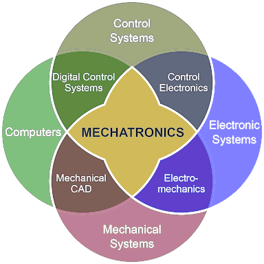

Mechatronika alapjai
A tantárgy célja, hogy a hallgatók elsajátítsák a mechatronika tudományterületének alapfogalmait, valamint jártasságot szerezzenek a pneumatikus berendezések működtetésében.
Aláírás feltételei:
- Az előadások (min. 60%) és gyakorlatok (min. 70%) rendszeres látogatása.
- Részvétel a kötelező laborgyakorlatokon, hiányzás esetén pótlás.
- A 2 db zárthelyi legalább elégséges szintű teljesítése.
Ütemterv
- A félévi tematika és követelmények ismertetése. A tanszéki laboratóriumok bemutatása.
- Bevezetés a pneumatikába. Fizikai alapok, mértékegységek. A sűrített levegős rendszer elemei.
- A pneumatikus munkahengerek jellemzői: típusai, felépítésük, a dugattyúk mozgásfolyamata és méretezése.
- Pneumatikus vezérlőelemek: útvezérlő szelepek. Az egyoldalról működtetett munkahenger vezérlése.
- Pneumatikus vezérlőelemek: záró-, áramirányító és nyomást meghatározó szelepek. A kétoldalról működtetett munkahenger vezérlése.
- 1. zárthelyi dolgozat.
- Pneumatikus alapkapcsolások. Idő- és nyomásfüggő vezérlések.
- A munkahengerek löket közbeni megállítása. Sebesség-, erő- és nyomatékvezérlés. A pneumatikus berendezések méretezése, karbantartása.
- A mechatronika fejlődéstörténete. A mechatronikai rendszer definíciója, alapfogalmak. Kétkezes biztonsági indítások.
- A mechatronika építőelemei: szenzorok és aktuátorok. Logikai vezérlés ÉS, valamint VAGY nyomásszelepekkel.
- A mechatronika funkcionális és térbeli integrációja. Kétoldalról működtetett henger követő sorrendi vezérlése.
- Mechatronikai példák a gépjárművek fékrendszereiből (ABS, ESP). Pneumatikus számlálók, léptetőláncok.
- 2. zárthelyi dolgozat.
- Zárthelyi dolgozatok és laborgyakorlatok pótlása. Elővizsga alkalom.